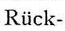
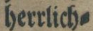
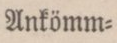

Level 2 und 3
Die Transkription der Silbentrennung erfolgt nach Vorlage.
| Vorlage | Zeichen | Entität | Beschreibung | Beispiel |
|---|---|---|---|---|
|  | - |
U+002D |
HYPHEN-MINUS |
Rück- |
|   | ⸗ |
U+2E17 |
DOUBLE OBLIQUE HYPHEN |
herrlich⸗ Ankömm⸗ |
Doppelbindestrich in: Arno Schmidt: Erzählungen, Frankfurt am Main 1994, ISBN 3-10-373505-7. Detail des rechten Randes der Seite 525 (mit Text aus der 1964 erstmals erschienenen Erzählung Caliban über Setebos) mit Doppelbindestrich in dem Kompositwort "Zweideutigkeit" und üblichem Einfach-Bindestrich zur Trennung des Wortes "wechselte".; Bildquelle: https://commons.wikimedia.org/wiki/File:Double_Hyphen_in_a_work_from_Arno_Schmidt.png. |
= |
U+003D |
EQUALS SIGN |
auserlesener Zwei=Deutig- |